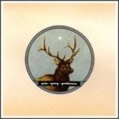

Music Reviews
-
Architecture in Helsinki Places Like This
Unoriginal, haphazardly thrown together and lacking most of what could make it the least bit enjoyable, Places Like This just proves that Architecture in Helsinki is a one trick pony. Let's hope that wherever "this" is, we never have to hear about it again.
Lewis Parry reviews... -
Various Artists (Compiled by DJ Hell) International Deejay Gigolos CD 10
After ten impressive years shaping the direction of dance music, Gigolos seem to be losing their way.
Pat Harte reviews... -
St. Vincent Marry Me
St. Vincent (née Annie Clark) makes a grand entrance on her mesmerizing debut.
-

Spoon Ga Ga Ga Ga Ga
Power pop makes yet another resurgence.
Alan Shulman looks at the latest incarnation... -

Smashing Pumpkins Zeitgeist
Billy Corgan and Jimmy Chamberlin re-unite as the Smashing Pumpkins for an album of bombast, pomposity, and a few genuinely great tunes.
Tom Lee takes a closer look... -
No Age Weirdo Rippers
Discord meets serenity on this LA duo's Fat Cat debut.
Brendan Phillips basks in the noise... -
Glenn Mercer Wheels In Motion
The Feelies singer/guitarist offers his first solo album on Pravda Records.
C.W. Thompson reviews... -

Pale Young Gentlemen Pale Young Gentlemen
Check this unsigned band out - you'll thank me.
Alan Shulman gives the details... -

Justice Cross
†unites the sincerely punk abrasive fuzziness of Homework and the microcut 70s revelry of Discovery and cooks up something that both Cerrone and digital hardcore junkies can celebrate.
George Booker reviews... -
Interpol Our Love To Admire
Can Interpol's major label debut match the ferocity of it's excellent lead single The Heinrich Maneuver?
David Coleman finds out...